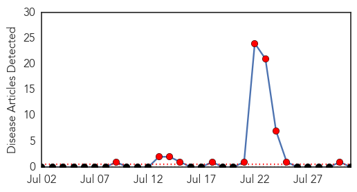
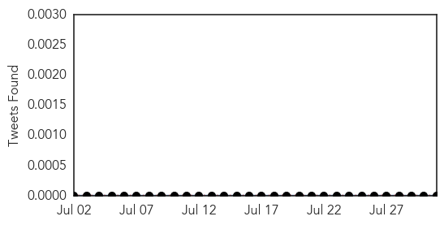
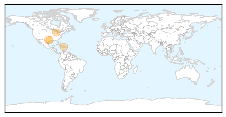

Bubonic Plague
30-Day Web Trend
11 alerts, 0 warnings

30-Day Twitter Trend
0 alerts, 0 warnings

Article Locations

Article Confidences

Top Articles:
-
No articles found for Jul 31, 2014
Top Tweets:
-
No tweets found for Jul 31, 2014
West Nile Virus
30-Day Web Trend
2 alerts, 0 warnings

30-Day Twitter Trend
0 alerts, 0 warnings

Article Locations
Article Confidences
Top Articles:
Top Tweets:
-
No tweets found for Jul 31, 2014